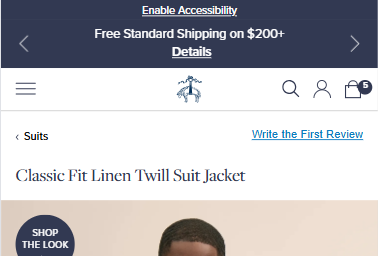

6.6% Home CTR Lift Via Product Grid Redesign
Placing more products immediately in view spoke to a broader audience and resulted in more conversions. Descriptions helped upper funnel lift matriculate down-funnel
I've worked across healthcare, retail, education and more to deliver value in a variety of ways. Explore my winning results below!

Placing more products immediately in view spoke to a broader audience and resulted in more conversions. Descriptions helped upper funnel lift matriculate down-funnel

How more aesthetic design improved conversion

Opening the lead form in a new tab enabled simultaneous form fill and research, improving motivation

Better expectation setting increased conversions down-funnel

Simpler UI reduces overload to improve engagement

Adding a global countdown timer capitalized on genuine urgency to increase cart additions for a high margin product

Clearer CTAs improve engagement

Product intent capture engages users with choice and improves down-funnel pathing and product displays

Reducing choice with a single CTA improved CTR by 2.1% globally

Adding a Forbes Award badge and expanding social proof with a carousel increased trust signals and drove more shoppers into the funnel on desktop

Adding conversion CTAs to the persistent global nav drove a 10.6% lift in Agent Start Page visits and a 19.6% lift in Quote Start Rate across HealthMarkets

Surfacing sticky conversion CTAs on the resources section drove massive lifts in agent funnel entry and quote start rate

Adding a search icon to stripped-down PDPs gave exploratory shoppers a path forward instead of a dead end, converting sessions that would otherwise have bounced
Pre-filling the form field users had already signalled their answer to turned a decision into a confirmation — and drove a 22.7% lift in completions

Aligning hero imagery with American customer values encouraged more shoppers to engage and enter the Census form

Smaller hero and a re-introduced clickable product grid on mobile drove a 4.5% Quote Start Rate lift and 16% increase in Cart Additions per visit
Book a free 30-minute strategy call — directly on my calendar.
Schedule a call